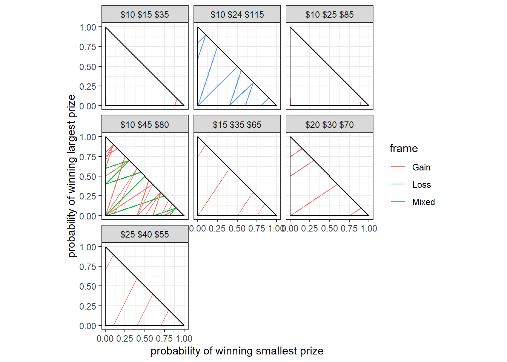
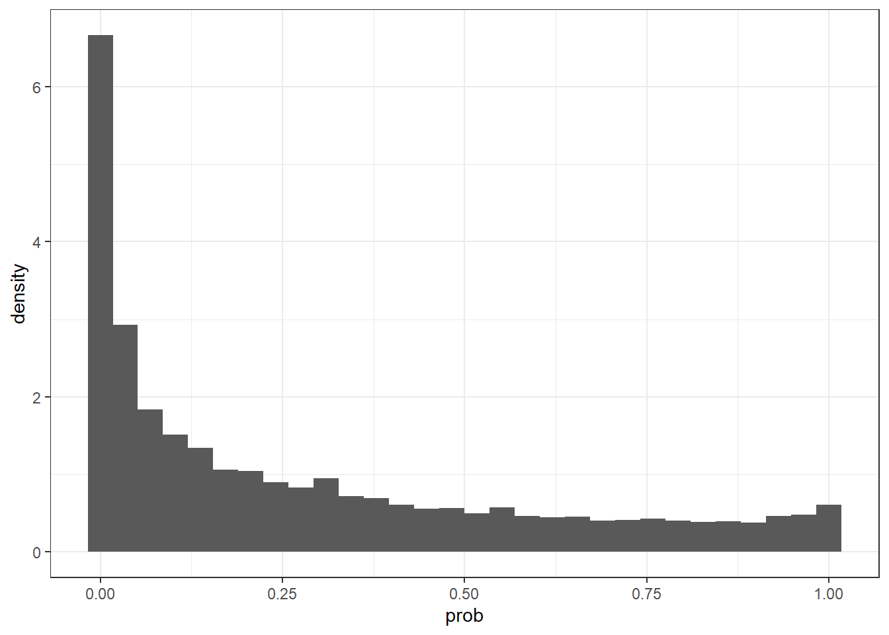
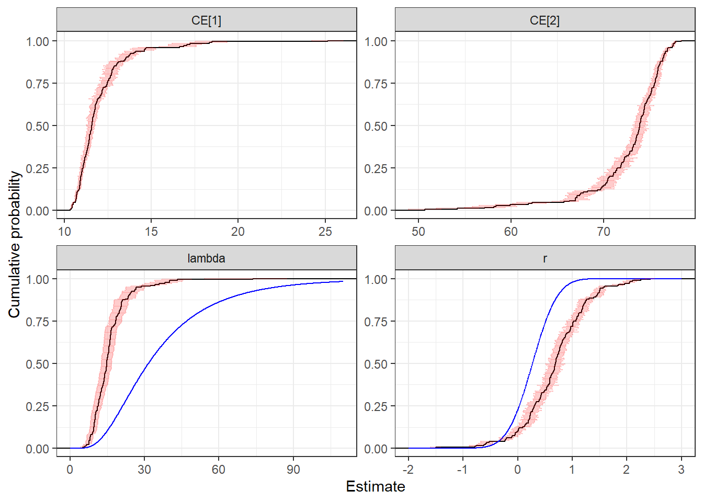
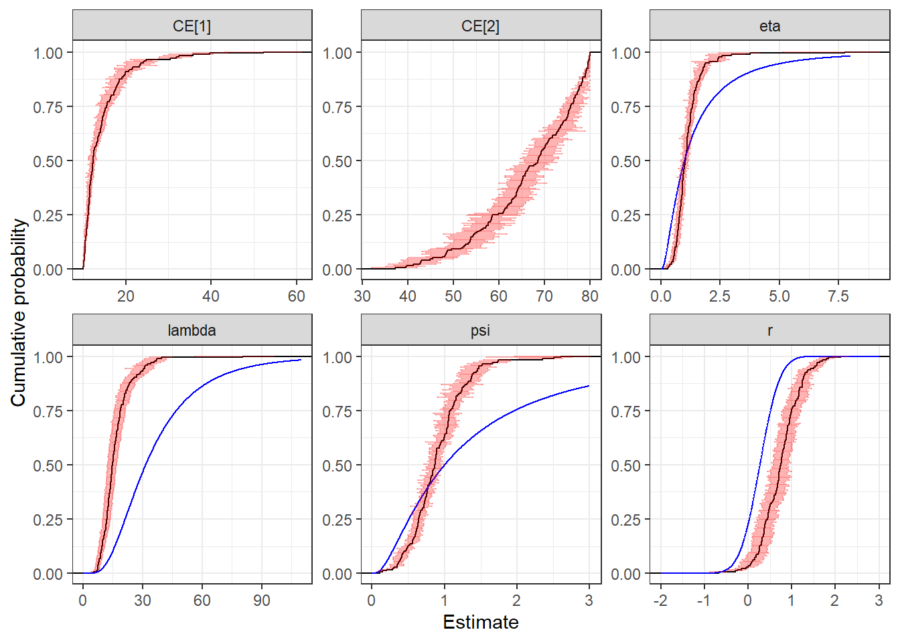
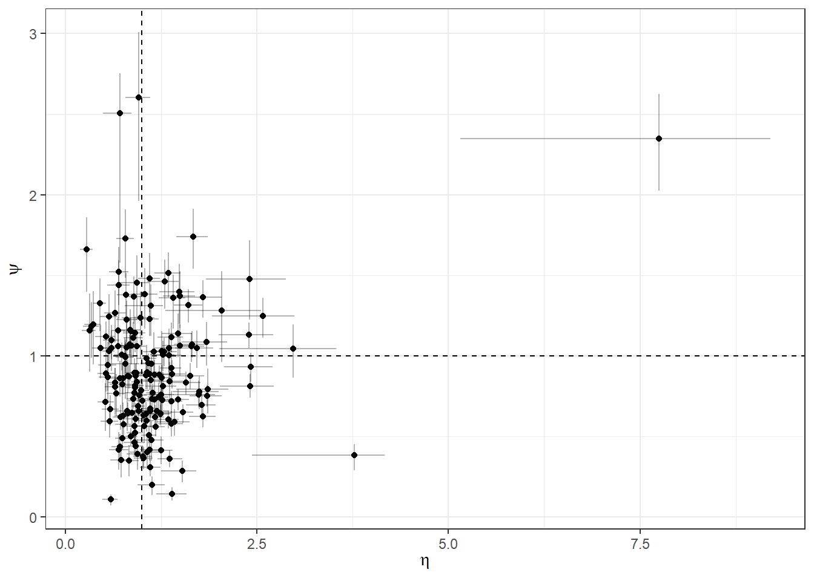
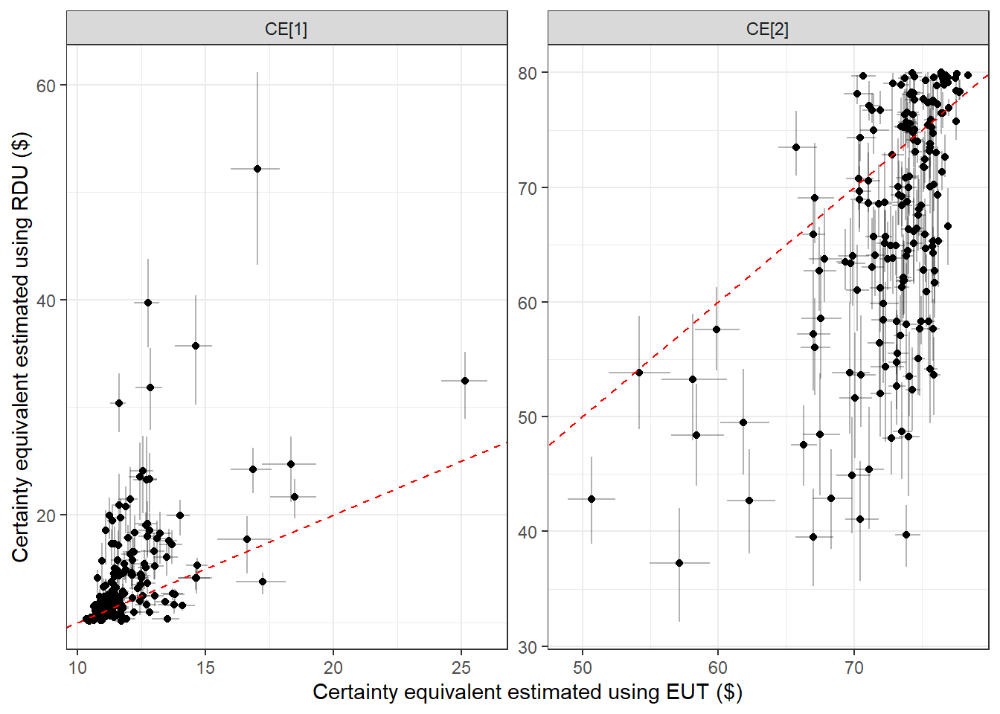
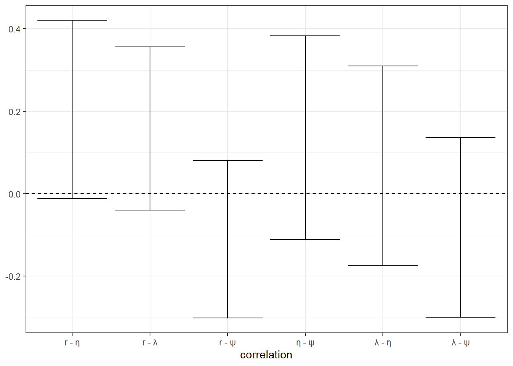
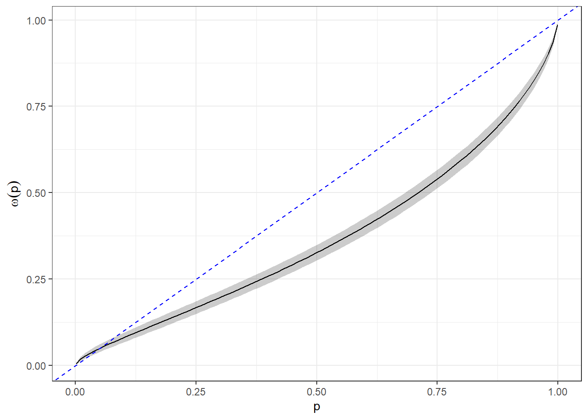
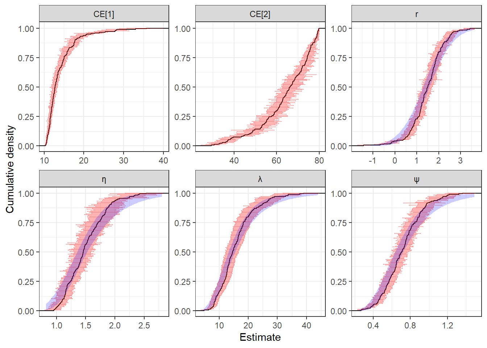

22 Application: Estimating risk preferences
Perhaps the most common use of structural models in experimental economics is the estimation of risk preferences. I would therefore not be doing the field justice if I did not devote at least one chapter (and I suspect there will be more later) to this topic. In this chapter, I will show you how to estimate some of the popular specifications that are taken to data from the “battery” binary choice experiment design, where participants are presented with many choices between two lotteries. To my knowledge, this design was first used by Hey and Di Cagno (1990), and has been the workhorse providing us with data to estimate risk preferences ever since.95
We can see individual-estimation of risk preferences using maximum likelihood estimation as early as Hey and Orme (1994), and the econometrics of this kind of experiment took a great leap forward as researchers started to meaningfully aggregate their participants’ decisions using mixture models with random parameters specifications (Conte, Hey, and Moffatt 2011), or exploiting correlation between parameters and observed participant characteristics (Harrison and Rutström 2009). These aggregating models are particularly important for the battery design, because typical experiments are under-powered at distinguishing between alternative models (Monroe 2020), but nonetheless can provide us with a lot of information about the population distribution. Furthermore, drawing inference about the population may in fact be a more satisfying answer to our research questions than being able to comment on how many participants are classified into each model individually.
22.1 Example dataset
For this application, I will use data from Harrison and Swarthout (2023). Specifically, I will use the subset of this dataset corresponding to undergraduate participants who played in the “house money” (as opposed to “earned endowment”) treatment. The 175 participants in this treatment each made 100 decisions over pairs of lotteries. These lotteries were over both gains and losses, however for simplicity here I add in the show-up fee and the pair’s “endowment” to ensure that all lottery prizes are strictly positive. Because both lotteries in a pair share the same three prizes, we can represent each lottery pair in a probability triangle, which plots the probability of winning the lowest prize on the horizontal axis, and the probability of winning the highest prize on the vertical axis. This is shown in Figure 22.1.
d<-"Code/RiskPreferences/HS2023Cleaned.rds" |>
readRDS() |>
filter(id==1) |>
mutate(context = paste0("$",prize1," $",prize2," $",prize3))
mmTri<-tibble(
x = c(0,0,1),
y = c(0,0,0),
xend = c(1,0,0),
yend = c(0,1,1)
)
(
ggplot(d,aes(x=qL1,y=qL3,xend=qR1,yend=qR3,color=frame))
+geom_segment()
+facet_wrap(~context)
+geom_segment(data=mmTri,aes(x=x,y=y,xend=xend,yend=yend),color="black")
+theme_bw()
+coord_fixed()
+xlab("probability of winning smallest prize")
+ylab("probability of winning largest prize")
)
Figure 22.1: The Harrison and Swarthout (2023) experiment represented in the probability triangle. Prizes for each lottery pair, inclusive of the endowment and show-up fee, are shown at the top of each panel. Some lottery pairs are obscured because their connecting line segments overlap with a segment for another pair.
In Figure 22.1, we can see a lot of the popular features of this kind of experiment design. In particular if we just focus on the “\(\$10\ \$45\ \$80\)” panel of this Figure, we can see that there is a wide range of slopes of the connecting line segments. If we were solely in the realm of Expected Utility Theory (EUT), this slope determines which of the two lotteries a participant will choose (if they choose without noise). Varying the slope allows participants with different amounts of risk-aversion to reveal their preferences to us. But there are also parallel line segments in this triangle. If participants choose according to EUT, then they should choose the lotteries at the same end of these parallel line segments.96 Hence, these parallel line segments provide participants with an opportunity to reveal to us that they are not making decisions according to EUT. Here we can also see that there are seven different “contexts” of lotteries presented. That is, the dollar amounts of the prizes are varied. This is a somewhat less common property of this class of experiment design,97 but this kind of variation is also useful because it allows us to observe behavior over a wider range of payoffs, possibly getting us a better estimate of the utility function over money.
22.2 We might not just be interested in the parameters
Depending on what we want to get out of our model, the model’s parameters may not be the most interesting things to us. This is because economically meaningful quantities are sometimes transformations of a model’s fundamental parameters. The good news for us is that once we have a posterior simulation of our model’s fundamental parameters, it is very easy to get a posterior simulation of these transformations: we simply apply the transformation to the simulated fundamental parameters. In practice, this transformation can be done post estimation, or during estimation in the generated quantities block in Stan. I am very much in favor of doing this in the generated quantities block, because Stan will then provide convergence diagnostics for all of these quantities.
For models of decision-making under risk, these transformed quantities of interest could be things like certainty equivalents, which convert utility measured in the units von Neumann–Morgenstern (VNM) utility into units of currency. These are much easier to interpret and compare between participants. I also like to interpret the logit choice precision parameter \(\lambda\) by transforming it into a predicted probability. For example, if \(\bar u\) is the largest possible utility difference in an experiment, the following quantity is the upper bound on the probability that a participant chooses the action that maximizes their utility:
\[ \left(1+\exp(-\bar u \lambda)\right)^{-1} \]
This converts the units of \(\lambda\), which are inverse utility to units, into a probability. I find this much easier to interpret and compare between participants.
22.3 Introducing some important models
22.3.1 Expected utility theory
A good place to start with modeling this kind of data is to assume that participants make choices according to expected utility theory (EUT). This means that we can write their maximization problem for their \(t\)th decision as:
\[ \max_{y}E(u_i(X)\mid y) \]
Where \(u(X)\) is participant \(i\)’s utility from monetary prize \(X\). The distribution \(X\mid y\) is determined by the lottery they chose.
While there are many ways we could make a simplifying assumption about the utility function \(u_i(\cdot)\), a common choice is to assume the constant relative risk-aversion specification:
\[ u_i(x)=\frac{x^{1-r_i}}{1-r_i} \]
where \(r_i\) is the coefficient of relative risk-aversion. That is, the participant is risk-neutral if \(r_i=0\), risk-averse if \(r_i>0\), and risk-loving when \(r_i>0\).
The second parameter in the model comes from specifying a probabilistic choice rule. Here I will use logit choice with the contextual utility normalization (Wilcox 2011), so coding \(y_{i,t}=1\) as indicating that the participant chose the left lottery, we have:
\[ \begin{aligned} p(y_{i,t}\mid r_i,\lambda_i)&=\Lambda\left(\lambda_i\left[\frac{E(u(X)\mid L_t)-E(u(X)\mid R_t)}{u_i(\overline x_t)-u_i(\underline x_t)}\right]\right)\\ \Lambda(x)&=(1+\exp(-x))^{-1} \end{aligned} \] where \(\lambda_i>0\) is the choice precision parameter, and \(\overline x_t\) and \(\underline x_t\) are the largest and smallest prize in lottery pair \(t\), respectively.
While we might be interested in our estimates of parameters \(r_i\) and \(\lambda_i\) themselves, we might also like to know what they imply about other economically meaningful quantities. One of these quantities could be a certainty equivalent of a lottery, which is the amount of money a participant would be indifferent between taking and receiving a draw from the lottery. That is, we define the certainty equivalent \(C(L)\) for lottery \(L\) as:
\[ u(C(L))=E(u(X)\mid L) \]
which for the CRRA EUT model we are using becomes:
\[ C(L)=\left(\sum_{k=1}^3x_{k}^{1-r_i}q_k^L\right)^{\frac{1}{1-r_i}} \]
where \(\{x_k\}_{k=1}^3\) are the three prizes for the lottery, and \(\{q_k\}_{k=1}^3\) are the probabilities of winning those prizes. Certainty equivalents are good at communicating information about participants’ preferences over lotteries because they convert units of Von-Neumann Mogernetern utility, which are hard to interpret and impossible to compare between participants, into dollars, which are easy to interpret and compare. Since they are just a function of the model’s fundamental parameters, certainty equivalents are also very easy to calculate in Stan’s generated quantities block, so I will do this for all of the models I estimate. Specifically, I will calculate certainty equivalents for the following lotteries:98
\[ \begin{aligned} L_1: & \text{ a 95 percent chance of winning 10, and a 5 percent chance of winning 80}\\ L_2: & \text{ a 5 percent chance of winning 10, and a 95 percent chance of winning 80}\\ \end{aligned} \]
In order to estimate this model at the individual level, or to estimate a pooled model, we need to choose priors for the parameters \(r\) and \(\lambda\). As I discuss in detail in James R. Bland (2025), choosing priors for structural models (and particularly for estimating risk preferences) is not something we should take lightly. This is partly because there are many non-linearities in these models, but we should not take this problem less seriously for linear models.
A good first step in formalizing priors is to ask what are the possible values for a parameter, however unlikely. That is, we pin down the support of the distribution. For \(r\), the parameter in the CRRA utility function, any real number gives us a valid utility function.99 In the case where we want our prior to cover the entire real number line, a good choice is to use the normal distribution:
\[ r_i\sim N(m_r,s_r^2) \]
For the choice precision parameter \(\lambda_i\), we need a prior that restricts this to positive real numbers. This is because negative values imply that the participant will choose the lottery with the smaller expected utility more often than the lottery with the larger. While there are of course many families of distribution that cover positive real numbers, I like to choose log-normal priors for such parameters. This is mainly because it makes going to a hierarchical model very easy. Therefore, in order to pin down the \(\lambda_i>0\) restriction, we will choose:
\[ \log\lambda_i\sim N(m_\lambda,s^2_\lambda) \]
We now need to choose values for \(m_r\), \(s_r\), \(m_\lambda\), and \(s_\lambda\). While this is an interesting exercise in itself, I will direct you to previous work I did in James R. Bland (2025), where I calibrated these priors to be:
\[ \begin{aligned} r_i&\sim N(0.27,0.36^2)\\ \log\lambda_i&\sim N(3.45,0.59^2) \end{aligned} \]
For \(r_i\), this matches nicely with the distribution of estimates from Holt and Laury (2002). For \(\lambda_i\), this covers most of the interesting range of choice precisions when choosing between (i) the middle prize for sure and (ii) a 50-50 mix of the low and high prizes.100 Before moving on, let’s investigate one of the implications of this prior just to make sure that it is doing (at least approximately) what we think it is doing.101 Figure 22.2 shows the implied prior distribution of the probability of choosing a 50-50 mix of \(\$80\) and \(\$10\) over \(\$45\) for sure. These prizes are for the most frequent context presented to participants in the experiment. Here we can see a large accumulation of mass at zero, which is to be expected, as the vast majority of the prior mass is in the risk-averse range. The rest of the distribution is reasonably spread out over the unit interval. At this point, if this plot looks surprising to you, you should go back and think about whether your prior is implying what you want it to.
set.seed(42)
d<-tibble(
r = rnorm(10000,mean=0.27,sd=0.36),
lambda = rnorm(10000,mean=3.45,sd=0.59) |> exp()
) |>
mutate(
uMin = (10^(1-r))/(1-r),
uMax = (80^(1-r))/(1-r),
uMid = (45^(1-r))/(1-r),
lDU = lambda*(0.5*uMin+0.5*uMax-uMid)/(uMax-uMin),
prob = 1/(1+exp(-lDU))
)
(
ggplot(d,aes(x=prob))
+geom_histogram(aes(y=after_stat(density)),bins=30)
+theme_bw()
)
Figure 22.2: prior distribution of the probability of choosing a 50-50 mix of $80 and $10 over $45 for sure.
Now that we have fully specified the likelihood and prior, we can go ahead and estimate the model. Here is the Stan file I wrote to estimate the EUT representative agent model.
data {
int<lower=0> N; // total number of decisions
int Left[N]; // indicator for chose the Left lottery
matrix[N,3] pLeft;
matrix[N,3] pRight;
matrix[N,3] prizes;
matrix[N,2] prizerange;
vector[2] prior_r;
vector[2] prior_lambda;
// information about the certainty equivalents
int nCE; // number of certainty equivalents to evaluate
vector[3] CEprizes[nCE]; // prizes for the lottery for certainty equivalents
vector[3] CEprobs[nCE]; // probabilities for the lottery for certainty equivalents
}
transformed data {
// We are going to have to compute this difference a lot, so it is best to pre-compute it
matrix[N,3] dprob = pLeft-pRight;
}
parameters {
real r;
real<lower=0> lambda;
}
model {
// priors
target += normal_lpdf(r | prior_r[1],prior_r[2]);
target += lognormal_lpdf(lambda | prior_lambda[1],prior_lambda[2]);
// likelihood
target += bernoulli_logit_lpmf( Left |
lambda * ((
dprob.*pow(prizes,1.0-r)
)*rep_vector(1.0,3)
)
./ // contextual utility normalization
(
pow(prizerange[,2],1.0-r)-pow(prizerange[,1],1.0-r)
)
);
}
generated quantities {
// calculate certainty equivalents
vector[nCE] CE;
for (cc in 1:nCE) {
CE[cc] = pow(pow(CEprizes[cc],1.0-r)'*CEprobs[cc],1.0/(1.0-r));
}
}Figure 22.3 summarizes the parameter estimates from the participant-specific estimations (black curves and red error bars), alongside the prior distribution (blue curves). Compared to the prior, we can see that participants are mostly less precise and more risk-averse than we expected. I would not read too much into this right now, as we will be taking a more flexible model to the data soon.
EUTIndividual<-readRDS("Code/RiskPreferences/Estimates_individual.rds") |>
filter(model=="EUT") |>
group_by(parameter) |>
arrange(mean) |>
mutate(cumulative = (1:n())/n()) |>
ungroup()
prior<-tibble(
parameter = "r",
x = seq(-2,3,length=1001),
cdf = pnorm(x,mean=0.27,sd=0.36)
) |>
rbind(
tibble(
parameter = "lambda",
x = seq(0,110,length=1001),
cdf = pnorm(log(x),mean=3.45,sd=0.59)
)
)
(
ggplot()
+stat_ecdf(data=EUTIndividual |> filter(parameter !="lp__"),aes(x=mean))
+geom_line(data=prior,aes(x=x,y=cdf),color="blue")
+theme_bw()
+geom_errorbar(alpha=0.2,color="red",data=EUTIndividual |> filter(parameter !="lp__"),aes(y=cumulative,xmin=X25.,xmax=X75.))
+facet_wrap(~parameter,scales="free")
+ylab("Cumulative probability")
+xlab("Estimate")
) 
Figure 22.3: Estimates from individual estimation of the EUT model. Empirical cumulative density functions (black curves) of individual posterior means (black lines) and 50% Bayesian credible regions (red lines). Blue curves show the prior cumulative density functions. CE[1] is the certainty equivalent for a 95% channce of winning $10, $80 otherwise. CE[2] is the certainty equivalent for a 5% chance of winning $10, $80 otherwise.
22.3.2 Rank-dependent utility (Quiggin 1982)
So where do we go from here? We will of course be estimating a hierarchical model using all of the data, but before then we will stay in the realm of single participant estimation, and estimate a more flexible model. One such model is the rank-dependent utility (RDU) model (Quiggin 1982). Compared to the EUT model, where probabilities enter into the utility function linearly (hence the “expected” part), the RDU model weights probabilities. In particular, RDU participants distort the cumulative distribution of prizes relative to an EUT participant. The RDU model uses a probability weighting function, which I will denote \(\omega_i(p)\), to distort these cumulative probabilities. That is, when the actual cumulative probability for a prize is \(p\), RDU participants will behave as if it is actually \(\omega_i\)(p). In this application, I adopt the convention that prizes are ranked from lowest to highest, but in other applications the reverse is also common.
For this application, I will use the Prelec (1998) specification of the probability-weighting function:102
\[ \omega_i(p)=\exp(-\eta_i(-\log p)^{\psi_i}) \]
where \(\eta_i,\psi_i>0\) are the function’s parameters. When \(\eta_i=\psi_i=1\) this function becomes \(\omega_i(p)=p\), which means that cumulative probabilities are not distorted, and so we are back to EUT.
These weighted cumulative probabilities are then converted into (de-cumulated, for want of a better word) “decision-weights” \(\pi_i\), which then enter into the decision-maker’s utility function as follows:
\[ \begin{aligned} V_i(q,x)&=\sum_{k=1}^K\pi_{i,k}(q)u_i(x_k)\\ \text{where: }\pi_{i,1}(q)&=\omega_i(q_1)\\ \pi_{i,2}(q)&=\omega_i(q_1+q_2)-\omega(q_1)\\ \pi_{i,k}(q)&=\omega_i\left(\sum_{j=1}^kq_k\right)-\omega_i\left(\sum_{j=1}^{k-1}q_k\right) \end{aligned} \]
where \(q_k\) and \(x_k\) are the \(k\)th probability and prize of the lottery, respectively.
I will use the same logit choice rule, CRRA parameterization of the utility function, and contextual utility normalization in this model as I do with the EUT models.
Before moving on to estimating the model, it is important to note a computational persnickety-ness that comes with using the Prelec weighting function: it will return an Inf or a NaN when we try to evaluate it at cumulative probabilities equal to zero or one. This is a real problem, because our lotteries will always have a cumulative probability equal to one, and many experiment designs, including Hey (2001), have cumulative probabilities equal to zero. Fortunately, the limits as cumulative probabilities approach these value are just zero and one, so we can do a bit of a computational monkey trick to fix the problem. Specifically, instead we can evaluate:
\[ \begin{aligned} \omega_i&\left[p+0.01(I(p=0)-I(p=1)\right](1-I(p=0)-I(p=1))+I(p=1)\\ &=\begin{cases} \omega_i(p)&\text{if }p\in(0,1)\\ 0&\text{if }p=0\\ 1&\text{if }p=1 \end{cases} \end{aligned} \]
where \(I(\cdot)\) is the indicator function. That is, inside the function \(\omega\), we add a little bit if \(p=0\), and we subtract a little bit if \(p=1\). We then correct this by ensuring the function returns exactly 0 or 1 in these cases. In practice, I have found it a bad idea to ask Stan whether a real-valued data element is exactly equal to something. This is because there can be minuscule rounding errors in the calculations that get to this number. Hence, you will see in the Stan file below I have if statements of the form if (q<tol), where tol is a very small positive number, instead of one of the form if (p==0).
Before estimating this model, we need to do a quick prior calibration. Since \(r_i\) and \(\lambda_i\) have the same interpretation as the EUT model, I will keep these priors as:
\[ \begin{aligned} r_i&\sim N(0.27,0.36^2)\\ \log\lambda_i&\sim N(3.45,0.59^2) \end{aligned} \]
For \(\eta_i\) and \(\psi_i\), log-normal priors are appropriate because these parameters must be non-negative. Furthermore, centering their medians on \(\eta_i=\psi_i=1\) will center these priors on the EUT model, which seems as good a place as any to start without considering any more information. I ended up using the following priors for these parameters:
\[ \begin{aligned} \log\eta_i&\sim N(\log(1),1^2)\\ \log\psi_i&\sim N(\log(1),1^2) \end{aligned} \]
Here is the Stan file I wrote to estimate the RDU model and calculate the certainty equivalents:
functions {
matrix decisionWeights(
real psi, real eta,
data matrix cprob, data matrix cprob0, data matrix cprob1
) {
int n = num_elements(cprob)%/%3;
/* Weighted cumulative probabilities
Here we need to watch out for p=0 and p=1 problems, where the weighting
function is undefined, but is 0 and 1 in the limit respectively. Here
I avoid getting NaNs by adding a little bit when p=0, and subtracting
a little bit when p=1. I then substitute in the limit exactly just below
this
*/
matrix[n,3] wcprob = exp(
-eta * pow(-log(cprob+0.01*(cprob0-cprob1)),psi)
);
wcprob = wcprob.*(1.0-cprob0-cprob1)+cprob1;
// convert to decision weights
matrix[n,3] wprob = wcprob;
for (kk in 2:3) {
wprob[,kk] = wcprob[,kk]-wcprob[,kk-1];
}
return wprob;
}
/* Calculating the certainty equivalent is a little more tricky for RDU, so
I am writing a function to do it so as not to clutter up the generated quantities
block
*/
real calcCE(vector probs, vector prizes,real r, real psi,real eta,real tol) {
vector[3] cprobs = probs;
for (pp in 2:3) {
cprobs[pp] = cprobs[pp-1]+probs[pp];
}
vector[3] wcprobs = exp(
-eta * pow(-log(cprobs),psi)
);
wcprobs[3] = 1.0; // avoids getting a NaN. This mucst be 1
for (pp in 1:2) {
if (wcprobs[pp]<tol) {
wcprobs[pp] = 0.0;
}
}
vector[3] wprobs = wcprobs;
for (pp in 2:3) {
wprobs[pp] = wcprobs[pp]-wcprobs[pp-1];
}
return pow(pow(prizes,1.0-r)'*wprobs,1.0/(1.0-r));
}
}
data {
int<lower=0> N; // total number of decisions
int Left[N]; // indicator for chose the Left lottery
matrix[N,3] pLeft;
matrix[N,3] pRight;
matrix[N,3] prizes;
matrix[N,2] prizerange;
vector[2] prior_r;
vector[2] prior_lambda;
vector[2] prior_psi;
vector[2] prior_eta;
real<lower=0> tol;
// information about the certainty equivalents
int nCE; // number of certainty equivalents to evaluate
vector[3] CEprizes[nCE]; // prizes for the lottery for certainty equivalents
vector[3] CEprobs[nCE]; // probabilities for the lottery for certainty equivalents
}
transformed data {
matrix[N,3] cprobLeft = pLeft;
matrix[N,3] cprobRight = pRight;
matrix[N,3] cprobLeft0 = rep_matrix(0.0,N,3);
matrix[N,3] cprobLeft1 = rep_matrix(0.0,N,3);
matrix[N,3] cprobRight0 = rep_matrix(0.0,N,3);
matrix[N,3] cprobRight1 = rep_matrix(0.0,N,3);
for (kk in 2:3) {
cprobLeft[,kk] = cprobLeft[,kk-1]+pLeft[,kk];
cprobRight[,kk] = cprobRight[,kk-1]+pRight[,kk];
}
for (ii in 1:N) {
for (kk in 1:3) {
if (cprobLeft[ii,kk]<tol) {
cprobLeft0[ii,kk] = 1.0;
}
if (cprobLeft[ii,kk]>(1.0-tol)) {
cprobLeft1[ii,kk] = 1.0;
}
if (cprobRight[ii,kk]<tol) {
cprobRight0[ii,kk] = 1.0;
}
if (cprobRight[ii,kk]>(1.0-tol)) {
cprobRight1[ii,kk] = 1.0;
}
}
}
}
parameters {
real r;
real<lower=0> lambda;
real<lower=0> psi;
real<lower=0> eta;
}
model {
// priors
target += normal_lpdf(r | prior_r[1],prior_r[2]);
target += lognormal_lpdf(lambda | prior_lambda[1],prior_lambda[2]);
target += lognormal_lpdf(psi | prior_psi[1],prior_psi[2]);
target += lognormal_lpdf(eta | prior_eta[1],prior_eta[2]);
// likelihood
matrix[N,3] dprob =
decisionWeights(psi, eta, cprobLeft, cprobLeft0, cprobLeft1)
-
decisionWeights(psi, eta, cprobRight, cprobRight0, cprobRight1)
;
target += bernoulli_logit_lpmf( Left |
lambda * ((
dprob.*pow(prizes,1.0-r)
)*rep_vector(1.0,3)
)
./ // contextual utility normalization
(
pow(prizerange[,2],1.0-r)-pow(prizerange[,1],1.0-r)
)
);
}
generated quantities {
// calculate certainty equivalents
vector[nCE] CE;
for (cc in 1:nCE) {
CE[cc] = calcCE(CEprobs[cc], CEprizes[cc],r,psi,eta,tol);
}
}Figure 22.4 summarizes the estimates from these participant-specific estimations. In particular note that there appears to be a large concentration of estimates of \(\eta_i\) and \(\psi_i\) around one, which you can see in this Figure as steep parts of the empirical cdf of posterior means (black lines). This suggests that, at least for a reasonable minority of participants, the \(\eta_i=\psi_i=1\) restriction does not seem too bad.
RDUIndividual<-readRDS("Code/RiskPreferences/Estimates_individual.rds") |>
filter(model=="RDU") |>
arrange(id,parameter) |>
group_by(parameter) |>
arrange(mean) |>
mutate(cumulative = (1:n())/n()) |>
ungroup()
prior<-tibble(
parameter = "r",
x = seq(-2,3,length=1001),
cdf = pnorm(x,mean=0.27,sd=0.36)
) |>
rbind(
tibble(
parameter = "lambda",
x = seq(0,110,length=1001),
cdf = pnorm(log(x),mean=3.45,sd=0.59)
)
) |> rbind(
tibble(
parameter = "psi",
x = seq(0,3,length=1001),
cdf = pnorm(log(x),mean=0,sd=1)
)
) |> rbind(
tibble(
parameter = "eta",
x = seq(0,8,length=1001),
cdf = pnorm(log(x),mean=0,sd=1)
)
)
(
ggplot()
+stat_ecdf(data=RDUIndividual |> filter(parameter !="lp__"),aes(x=mean))
+geom_line(data=prior,aes(x=x,y=cdf),color="blue")
+theme_bw()
+geom_errorbar(alpha=0.3,color="red",data=RDUIndividual |> filter(parameter !="lp__"),aes(y=cumulative,xmin=X25.,xmax=X75.))
+facet_wrap(~parameter,scales="free")
+ylab("Cumulative probability")
+xlab("Estimate")
) 
Figure 22.4: Estimates from individual estimation of the RDU model. Empirical cumulative density functions (black curves) of individual posterior means (black lines) and 50% Bayesian credible regions (red lines). Blue curves show the prior cumulative density functions. CE[1] is the certainty equivalent for a 95% channce of winning $10, $80 otherwise. CE[2] is the certainty equivalent for a 5% chance of winning $10, $80 otherwise.
However a closer look at the posterior means for these parameters in Figure 22.5 shows that there is no real concentration around \(\eta_i=\psi_i=1\). That is, it appears that the RDU model is implying substantially different behavior than EUT.
plotThis<-RDUIndividual |>
filter(parameter == "eta" | parameter == "psi") |>
pivot_wider(
id_cols = id,
names_from = parameter,
values_from = c(mean,X25.,X75.)
)
(
ggplot(plotThis,aes(x=mean_eta,y=mean_psi))
+geom_point()
+geom_errorbar(aes(xmin = X25._eta,xmax=X75._eta),alpha=0.3)
+geom_errorbar(aes(ymin = X25._psi,ymax=X75._psi),alpha=0.3)
+theme_bw()
+xlab(expression(eta))
+ylab(expression(psi))
+geom_hline(yintercept = 1.0,linetype="dashed")+geom_vline(xintercept = 1.0,linetype="dashed")
)
Figure 22.5: Individual posterior means of \(\eta_i\) and \(\psi_i\) (error bars show a 50% Bayesian credible region) from the RDU model. When both of these parameters are equal to one, the RDU model nests EUT.
22.3.3 Comparing the certainty equivalents estimated using EUT and RDU
Before we move on to the hierarchical model in the next section, I was interested to see how differently the EUT and RDU models estimated the certainty equivalent. That is, a priori it is not clear whether or not these will produce estimates that are substantially different. This could be for two reasons. Firstly, since EUT is a special case of RDU, it could be that the parameter estimates from the RDU model are close enough to the \(\eta_i=\psi_i=1\) restriction that behavior is effectively EUT. Secondly, even if this parameter restriction does not approximately hold, it could be that the estimated preferences over the lotteries are similar, and so we would estimate similar certainty equivalents. To investigate this, Figure 22.6 plots the estimated certainty equivalents from the EUT model (horizontal coordinate) and the RDU model (vertical coordinate). The dashed red line is a \(45^\circ\) line, and so if the estimates fall on or close to this line the models are estimating similar certainty equivalents. This is especially not the case for “CE[2]”, which is the certainty equivalent of a 5% chance of winning \(\$10\), and a 95% chance of winning \(\$80\). In this panel, we can see that the RDU model mostly estimates smaller certainty equivalents than the EUT model. Put differently, the EUT is over-valuing this lottery relative to the RDU model.
d<-readRDS("Code/RiskPreferences/Estimates_individual.rds") |>
filter(grepl("CE",parameter)) |>
pivot_wider(
id_cols = c(id,parameter),
names_from = model,
values_from = c(X25.,mean,X75.)
)
(
ggplot(d,aes(x=mean_EUT,y=mean_RDU))
+facet_wrap(~parameter,scales="free")
+geom_errorbar(aes(ymin = X25._RDU,ymax=X75._RDU),alpha=0.3)
+geom_errorbar(aes(xmin=X25._EUT,xmax=X75._EUT),alpha=0.3)
+theme_bw()
+geom_point()
+geom_abline(slope=1,intercept=0,color="red",linetype="dashed")
+xlab("Certainty equivalent estimated using EUT ($)")+ylab("Certainty equivalent estimated using RDU ($)")
)
Figure 22.6: Certainty equivalents estimated using the EUT and RDU models. Dots show posterior means. Error bars show 50% Bayesian credible regions.
22.4 A hierarchical specification
Of course, this wouldn’t be the full Bayesian treatment without at least one hierarchical model. Here I am going to estimate the RDU model using data from all 175 participants, allowing each of the RDU model’s parameters to be participant-specific random draws from a (transformed) multivariate normal distribution. This specification therefore has the same likelihood as the individual-specific models (we just add up the likelihood contribution for each participant), and I will not be doing anything too novel by assuming a (transformed) multivariate normal distribution for these individual-level parameters:
\[ \begin{aligned} \begin{pmatrix} r_i\\ \log\lambda_i \\ \log\eta_i \\ \log \psi_i \end{pmatrix}&\sim N\left(\mu,\mathrm{diag\_matrix}(\tau)\Omega\mathrm{diag\_matrix}(\tau)\right) \end{aligned} \]
and then assign (hyper)-priors to the population-level parameters:
\[ \begin{aligned} \mu_r&\sim N(0.27,0.36^2)\\ \mu_\lambda&\sim N(3.45,0.59^2)\\ \mu_\eta&\sim N(0,1)\\ \mu_\psi&\sim N(0,1)\\ \tau_r,\ \tau_\lambda,\ \tau_\eta,\ \tau_\psi &\sim \mathrm{Cauchy}^+(0,1)\\ \Omega &\sim \mathrm{LKJ}(4) \end{aligned} \]
Note that I have carried forward my priors for \(r\), \(\lambda\), \(\eta\), and \(\mu\) in the participant-specific RDU model to be the priors for the relevant elements of \(\mu\). This means that the “representative agent” of the hierarchical model (i.e. the fictitious median participant with (transformed) parameters \(\mu\)) has the same priors as the participant-specific model. Really I suspect that we could be much more “informative” about these, because they are measures of central tendency, rather than for an individual participant. However the participant-specific priors serve at least as a good starting point for forming a prior for \(\mu\). The \(\mathrm{Cauchy}^+(0,1)\) (hyper)-priors for the standard deviation parameters (\(\tau\)) actually cover a lot of the parameter space that implies a lot of dispersion in the individual-level parameters (especially for the parameters transformed by logs), so I am not too worried about being overly “informative” here. Finally, the \(\mathrm{LKJ}(4)\) prior for \(\Omega\) is centered on, and peaked at, zero correlation, but does not rule out large correlations too much.
Here is is the Stan program I wrote to estimate this model. While there is not much here that is not either taken straight from the participant-specific RDU model, or standard Bayesian hierarchical model stuff, it is importantan to note a few things. Firstly, I make sure that \(r_i\), \(\lambda_i\), \(\eta_i\), and \(\psi_i\) are generated in the transformed parameters block so I can access them post estimation (this would not be the case if I calculated them in the model block). Also, I am using the data variable idstatend to keep track of where a participant’s data show up in the pooled data. This requires that the pooled data is sorted by participant.
functions {
matrix decisionWeights(
real psi, real eta,
data matrix cprob, data matrix cprob0, data matrix cprob1
) {
int n = num_elements(cprob)%/%3;
/* Weighted cumulative probabilities
Here we need to watch out for p=0 and p=1 problems, where the weighting
function is undefined, but is 0 and 1 in the limit respectively. Here
I avoid getting NaNs by adding a little bit when p=0, and subtracting
a little bit when p=1. I then substitute in the limit exactly just below
this
*/
matrix[n,3] wcprob = exp(
-eta * pow(-log(cprob+0.01*(cprob0-cprob1)),psi)
);
wcprob = wcprob.*(1.0-cprob0-cprob1)+cprob1;
// convert to decision weights
matrix[n,3] wprob = wcprob;
for (kk in 2:3) {
wprob[,kk] = wcprob[,kk]-wcprob[,kk-1];
}
return wprob;
}
/* Calculating the certainty equivalent is a little more tricky for RDU, so
I am writing a function to do it so as not to clutter up the generated quantities
block
*/
real calcCE(vector probs, vector prizes,real r, real psi,real eta,real tol) {
vector[3] cprobs = probs;
for (pp in 2:3) {
cprobs[pp] = cprobs[pp-1]+probs[pp];
}
vector[3] wcprobs = exp(
-eta * pow(-log(cprobs),psi)
);
wcprobs[3] = 1.0; // avoids getting a NaN. This mucst be 1
for (pp in 1:2) {
if (wcprobs[pp]<tol) {
wcprobs[pp] = 0.0;
}
}
vector[3] wprobs = wcprobs;
for (pp in 2:3) {
wprobs[pp] = wcprobs[pp]-wcprobs[pp-1];
}
return pow(pow(prizes,1.0-r)'*wprobs,1.0/(1.0-r));
}
}
data {
int<lower=0> N; // total number of decisions
int<lower=0> nparticipants;
int id[N];
int idstartend[nparticipants,2];
int Left[N]; // indicator for chose the Left lottery
matrix[N,3] pLeft;
matrix[N,3] pRight;
matrix[N,3] prizes;
matrix[N,2] prizerange;
vector[2] prior_MU[4];
vector[4] prior_TAU;
real prior_OMEGA;
real<lower=0> tol;
// information about the certainty equivalents
int nCE; // number of certainty equivalents to evaluate
vector[3] CEprizes[nCE]; // prizes for the lottery for certainty equivalents
vector[3] CEprobs[nCE]; // probabilities for the lottery for certainty equivalents
}
transformed data {
matrix[N,3] cprobLeft = pLeft;
matrix[N,3] cprobRight = pRight;
matrix[N,3] cprobLeft0 = rep_matrix(0.0,N,3);
matrix[N,3] cprobLeft1 = rep_matrix(0.0,N,3);
matrix[N,3] cprobRight0 = rep_matrix(0.0,N,3);
matrix[N,3] cprobRight1 = rep_matrix(0.0,N,3);
for (kk in 2:3) {
cprobLeft[,kk] = cprobLeft[,kk-1]+pLeft[,kk];
cprobRight[,kk] = cprobRight[,kk-1]+pRight[,kk];
}
for (ii in 1:N) {
for (kk in 1:3) {
if (cprobLeft[ii,kk]<tol) {
cprobLeft0[ii,kk] = 1.0;
}
if (cprobLeft[ii,kk]>(1.0-tol)) {
cprobLeft1[ii,kk] = 1.0;
}
if (cprobRight[ii,kk]<tol) {
cprobRight0[ii,kk] = 1.0;
}
if (cprobRight[ii,kk]>(1.0-tol)) {
cprobRight1[ii,kk] = 1.0;
}
}
}
}
parameters {
vector[4] MU;
vector<lower=0>[4] TAU;
cholesky_factor_corr[4] L_OMEGA;
matrix[4,nparticipants] z;
}
transformed parameters {
vector[nparticipants] r;
vector[nparticipants] lambda;
vector[nparticipants] eta;
vector[nparticipants] psi;
{
matrix[4,nparticipants] theta = rep_matrix(MU,nparticipants)+ diag_pre_multiply(TAU,L_OMEGA)*z;
r = theta[1,]';
lambda = exp(theta[2,]');
eta = exp(theta[3,]');
psi = exp(theta[4,]');
}
}
model {
to_vector(z) ~ std_normal();
// priors
for (pp in 1:4) {
MU[pp] ~ normal(prior_MU[pp][1],prior_MU[pp][2]);
TAU[pp] ~ cauchy(0.0,prior_TAU[pp]);
}
L_OMEGA ~ lkj_corr_cholesky(prior_OMEGA);
for (ii in 1:nparticipants) {
int start = idstartend[ii,1];
int end = idstartend[ii,2];
real ri = r[ii];
real lambdai = lambda[ii];
real etai = eta[ii];
real psii = psi[ii];
matrix[end-start+1,3] dprob =
decisionWeights(psii, etai, cprobLeft[start:end,], cprobLeft0[start:end,], cprobLeft1[start:end,])
-
decisionWeights(psii, etai, cprobRight[start:end,], cprobRight0[start:end,], cprobRight1[start:end,])
;
target += bernoulli_logit_lpmf( Left[start:end] |
lambdai * ((
dprob.*pow(prizes[start:end,],1.0-ri)
)*rep_vector(1.0,3)
)
./ // contextual utility normalization
(
pow(prizerange[start:end,2],1.0-ri)-pow(prizerange[start:end,1],1.0-ri)
)
);
}
}
generated quantities {
matrix[4,4] OMEGA = L_OMEGA*L_OMEGA';
// calculate certainty equivalents
vector[nCE] CE[nparticipants];
for (ii in 1:nparticipants) {
for (cc in 1:nCE) {
CE[ii][cc] = calcCE(CEprobs[cc], CEprizes[cc],r[ii],psi[ii],eta[ii],tol);
}
}
}22.4.1 Population-level estimates
Table 22.1 shows posterior moments of the population-level parameters. Since all of the individual-level parameters except for \(r_i\) have transformed normal distributions, it is difficult to interpret the numbers corresponding to these parameters, so I will attempt to put them in context below. For \(r_i\), we can see that the mean level of risk-aversion (1.439) is solidly in the “stay in bed” category defined by Holt and Laury (2002), although the standard deviation is large enough that its distribution will cover a wide range of risk preferences. We will check on this later when we look at the individual-level estimates.
rounding<-3
RDU<-"Code/RiskPreferences/FitRDU.rds" |>readRDS()
parlabels<-c(r="$r$",lambda="$\\lambda$",eta="$\\eta$",psi="$\\psi$")
partxt<-c(r="r",lambda="\u03bb",eta = "\u03b7",psi = "\u03c8")
popparlabels<-c(MU = "$\\mu$", TAU = "$\\tau$")
RDUsummary<-summary(RDU)$summary |>
data.frame() |>
rownames_to_column(var = "par") |>
mutate(
parameter = gsub("[^A-Za-z]+", "", par),
parameter_index = parse_number(par),
msd = paste0(mean |> round(rounding)," (",sd |> round(rounding),")")
)
RDUpopulation<-RDUsummary |>
filter(parameter=="MU" | parameter == "TAU" | parameter=="OMEGA") |>
mutate(
parlabel = parlabels[parameter_index]
)
OMEGA<-RDUpopulation |>
filter(parameter=="OMEGA") |>
# get the right row and column indices
mutate(
row = floor(parameter_index/10),
col = parameter_index-10*row
) |>
filter(row<=col) |>
mutate(
rowlabel = parlabels[row],
collabel = parlabels[col]
) |>
pivot_wider(
id_cols = rowlabel,
names_from = collabel,
values_from = msd,
values_fill = ""
) |>
mutate(
parameter = paste("$\\Omega$"," - ",rowlabel)
) |>
dplyr::select(-rowlabel)
TAB<- RDUpopulation |>
filter(parameter!="OMEGA") |>
pivot_wider(id_cols = parameter,
names_from = parlabel,
values_from = msd
) |>
mutate(parameter = popparlabels[parameter]) |>
rbind(OMEGA)
TAB |>
kbl(caption = "Population level estimates (posterior means with standard deviations in parentheses) from the hierarchical RDU model.") |>
kable_classic(full_width=FALSE) |>
row_spec(2,hline_after = T,extra_css = "border-bottom: 1px solid")| parameter | \(r\) | \(\lambda\) | \(\eta\) | \(\psi\) |
|---|---|---|---|---|
| \(\mu\) | 1.439 (0.073) | 2.662 (0.04) | 0.361 (0.03) | -0.391 (0.032) |
| \(\tau\) | 0.835 (0.065) | 0.446 (0.036) | 0.287 (0.03) | 0.361 (0.029) |
| \(\Omega\) - \(r\) | 1 (0) | 0.162 (0.1) | 0.214 (0.111) | -0.114 (0.097) |
| \(\Omega\) - \(\lambda\) | 1 (0) | 0.065 (0.123) | -0.084 (0.112) | |
| \(\Omega\) - \(\eta\) | 1 (0) | 0.14 (0.127) | ||
| \(\Omega\) - \(\psi\) | 1 (0) |
Table 22.1 also shows the estimated correlations between the (transformed) parameters, however it is difficult to determine from this Table whether or not these are substantially different to zero. Figure 22.7 shows 95% Bayesian credible regions for these correlation parameters. All of them cover zero.103
OMEGA<-RDUpopulation |>
filter(parameter=="OMEGA") |>
# get the right row and column indices
mutate(
row = floor(parameter_index/10),
col = parameter_index-10*row,
correlation = paste(partxt[row],"-",partxt[col])
) |>
filter(row<col)
(
ggplot(OMEGA,aes(x=correlation,ymin=X2.5.,ymax = X97.5.))
+geom_errorbar()
+theme_bw()
+geom_hline(yintercept=0,linetype="dashed")
)
Figure 22.7: 95% Bayesian credible regions (2.5th-95th percentile) for the correlation parameters \(\Omega\)
Before turning to the individual-level estimates, it is sometimes useful to investigate what these population-level parameters imply about the median or “representative agent” participant in the model. To show you how to do this, we will look at the implications of these estimates for the probability weighting function. Figure 22.8 shows the estimated probability weighting function for this representative agent. Here we can see that most cumulative probabilities are under-weighted, especially those cumulative probabilities close to one.
# a probability-weighting function for every step of the posterior sample
d<-tibble(
eta=exp(extract(RDU)$MU[,3]),
psi=exp(extract(RDU)$MU[,4])
) |>
mutate(
s = 1:n()
)|>
expand_grid(
p = c(0.001,seq(0.01,0.99,length=99),0.999)
) |>
mutate(
w = exp(-eta*(-log(p))^psi)
)
# a summary of the posterior sample
dsum<-d |>
group_by(p) |>
summarize(
mean = mean(w),
min95 = quantile(w,0.025),
max95 = quantile(w,0.975)
)
(
ggplot()
+theme_bw()
+geom_line(data=dsum,aes(x=p,y=mean))
+geom_ribbon(data=dsum,aes(x=p,ymin=min95,ymax=max95),fill="black",alpha=0.2)
+geom_abline(slope=1,intercept=0,linetype="dashed",color="blue")
+ylab(expression(omega(p)))
)
Figure 22.8: Probability weighting function for the median (‘representative agent’) participant in the hierarchical RDU model. Black curve shows the posterior mean. The shaded region is a 95% Bayesian credible region (2.5th-97.5th percentile), and the blue dashed line is a \(45^\circ\) line. The \(45^\circ\) line is also the probability weighting function for an EUT participant.
22.4.2 Participant-level estimates
But hierarchical models also provide us with estimates for the participant-level parameters. In fact, we may be more interested in these, and the population-level parameters could just be means to an end in estimating participant-level quantities.104 Figure 22.9 shows the individual-level estimates (black curves and red error bars) alongside the estimated population distributions (blue shaded regions, i.e. those implied by \(\mu\) and \(\tau\)). The interpretation of these estimates (excluding the estimated population distributions) is similar to those shown in Figure 22.4, which is from the participant-specific estimation done using the RDU model. In this case, though, our posterior estimates for each participant are informed by all of the data, not just the data from that participant. That is, we learn something about participant \(i\)’s parameters not just through \(i\)’s own decisions, but also because all the other participants \(j\neq i\) help inform our prior for estimating \(i\)’s parameters.
RDUi<-RDUsummary |>
filter(
parameter == "r" | parameter == "lambda" | parameter == "eta" | parameter=="psi" | parameter == "CE"
) |>
mutate(
id = ifelse(parameter=="CE",
floor(parameter_index/10)
,
parameter_index
),
CEindex = ifelse(parameter=="CE",
parameter_index - floor(parameter_index/10)*10,
NA
),
parlabel = ifelse(parameter=="CE",paste0("CE[",CEindex,"]"),
partxt[parameter]
)
) |>
group_by(parlabel) |>
arrange(mean) |>
mutate(
cumul = (1:n())/n()
)
popcdf_MU<-tibble(
MU_r = extract(RDU)$MU[,1],
MU_lambda = extract(RDU)$MU[,2],
MU_eta = extract(RDU)$MU[,3],
MU_psi = extract(RDU)$MU[,4]
) |>
mutate(
s = 1:n()
)|>
expand_grid(
p = seq(0.01,0.99,length=99)
) |>
pivot_longer(
cols = MU_r:MU_psi,
names_to = "parameter",
values_to = "MU"
) |>
mutate(
parameter = str_replace(parameter,"MU_","")
)
popcdf_TAU<-tibble(
TAU_r = extract(RDU)$TAU[,1],
TAU_lambda = extract(RDU)$TAU[,2],
TAU_eta = extract(RDU)$TAU[,3],
TAU_psi = extract(RDU)$TAU[,4]
) |>
mutate(
s = 1:n()
)|>
expand_grid(
p = seq(0.01,0.99,length=99)
) |>
pivot_longer(
cols = TAU_r:TAU_psi,
names_to = "parameter",
values_to = "TAU"
)|>
mutate(
parameter = str_replace(parameter,"TAU_","")
)
pltlims<-RDUi |>
group_by(parameter) |>
summarize(
min = min(X25.),
max = max(X75.)
) |>
filter(parameter!="CE")
popcdf<-popcdf_MU |>
full_join(popcdf_TAU,
by = c("s","p","parameter")
) |>
full_join(
pltlims,
by = "parameter"
) |>
mutate(
x = ifelse(parameter=="r",min +(max-min)*p,log(min +(max-min)*p)),
cdf = pnorm((x-MU)/TAU),
x = ifelse(parameter=="r",x,exp(x))
) |>
group_by(parameter,x) |>
summarize(
cdf_LB = quantile(cdf,probs=0.025),
cdf_UB = quantile(cdf,probs=0.975)
) |>
mutate(
parlabel = partxt[parameter]
)
(
ggplot(RDUi,aes(x=mean))
+stat_ecdf()
+geom_errorbar(aes(xmin = X25.,xmax = X75.,y=cumul),color="red",alpha = 0.3)
+geom_ribbon(data=popcdf,aes(x=x,ymin=cdf_LB,ymax=cdf_UB),alpha = 0.2,fill="blue")
+facet_wrap(~parlabel,scales="free")
+theme_bw()
+xlab("Estimate")
+ylab("Cumulative density")
)
Figure 22.9: Participant-level parameter estimates from the hierarchical RDU model. The black curve shows the empirical cumulative density of posterior means. Red error bars are a 50% Bayesian credible region (25th-75th percentile). Blue shaded region is a 95% Bayesian credible region (2.5th-97.5th percentile) for the poplation cumulative density function for each parameter (not shown for certainty equivalets).
22.5 R code used to estimate these models
Script to do the participant-specific estimation:
library(tidyverse)
library(rstan)
rstan_options(auto_write = TRUE)
options(mc.cores = parallel::detectCores())
rstan_options(threads_per_chain = 1)
D<-"Code/RiskPreferences/HS2023Cleaned.rds" |>
readRDS()
models<-list(
EUT = "Code/RiskPreferences/EUT_individual.stan" |> stan_model(),
RDU = "Code/RiskPreferences/RDU_individual.stan" |> stan_model()
)
EstimatesSummary<-tibble()
for (ii in (D$id |> unique())) {
d<-D |>
filter(id==ii)
dStan<-list(
N = dim(d)[1],
Left = d$Left,
pLeft = cbind(d$qL1,d$qL2,d$qL3),
pRight = cbind(d$qR1,d$qR2,d$qR3),
prizes = cbind(d$prize1,d$prize2,d$prize3),
prizerange = cbind(d$prize1,d$prize3),
prior_r = c(0.27,0.36),
prior_lambda = c(log(30),0.5),
prior_psi = c(0,1),
prior_eta = c(0,1),
tol = 1e-6,
nCE = 2,
CEprizes = list(c(10,45,80),c(10,45,80)),
CEprobs = list(c(0.95,0,0.05),c(0.05,0,0.95))
)
for (mm in names(models)) {
Fit<-models[[mm]] |>
sampling(data=dStan,seed=42,
iter=4000,
control=list(adapt_delta=0.999))
addThis<-summary(Fit)$summary |>
data.frame()
addThis$parameter<-rownames(addThis)
EstimatesSummary<-EstimatesSummary |>
rbind(
addThis |>
mutate(
id = ii,
model = mm
)
)
}
EstimatesSummary |>
saveRDS("Code/RiskPreferences/Estimates_Individual.rds")
}Script to estimate the hierarchical models
library(tidyverse)
library(rstan)
rstan_options(auto_write = TRUE)
options(mc.cores = parallel::detectCores())
rstan_options(threads_per_chain = 1)
D<-"Code/RiskPreferences/HS2023Cleaned.rds" |>
readRDS() |>
mutate(id = paste("-",id,"-") |> as.factor() |> as.numeric()) |>
arrange(id)
idstartend<- D|>
ungroup() |>
mutate(rownum = 1:n()) |>
group_by(id) |>
summarize(
start = min(rownum),
end = max(rownum)
)
ReRunRDU<-FALSE
ReRunEUT<-FALSE
ReRunRDU_t<-TRUE
# Hierarchical RDU model with student t distribution
file <-"Code/RiskPreferences/FitRDU_t.rds"
if (!file.exists(file) | ReRunRDU_t) {
print(paste("Estimating RDU hierarchical model with Student t distribution. Output will go into: ",file))
RDU_t <- "Code/RiskPreferences/RDU_hierarchical_student_t.stan" |> stan_model()
dStan<-list(
N = dim(D)[1],
Left = D$Left,
id = D$id,
nparticipants = dim(idstartend)[1],
idstartend = idstartend |> select(start,end),
pLeft = cbind(D$qL1,D$qL2,D$qL3),
pRight = cbind(D$qR1,D$qR2,D$qR3),
prizes = cbind(D$prize1,D$prize2,D$prize3),
prizerange = cbind(D$prize1,D$prize3),
prior_MU<-list(
c(0.27,0.36),
c(3.45,0.59),
c(0,1),
c(0,1)
),
prior_TAU = c(1,1,1,1),
prior_OMEGA = 4,
prior_nu = c(15,7.5),
tol = 1e-6,
nCE = 2,
CEprizes = list(c(10,45,80),c(10,45,80)),
CEprobs = list(c(0.95,0,0.05),c(0.05,0,0.95))
)
FitRDU_t<-RDU_t |>
sampling(
data = dStan,seed=43,
pars="theta",include=FALSE,
iter=20000,
control = list(adapt_delta=0.99999)
)
FitRDU_t |>
saveRDS(file)
} else {
print(paste("skipping RDU_t,",file,"already exists"))
}
## RDU hierarchical model with multivariate normal distribution
file <-"Code/RiskPreferences/FitRDU.rds"
if (!file.exists(file) | ReRunRDU) {
print(paste("Estimating RDU hierarchical model. Output will go into: ",file))
RDU <- "Code/RiskPreferences/RDU_hierarchical.stan" |> stan_model()
dStan<-list(
N = dim(D)[1],
Left = D$Left,
id = D$id,
nparticipants = dim(idstartend)[1],
idstartend = idstartend |> select(start,end),
pLeft = cbind(D$qL1,D$qL2,D$qL3),
pRight = cbind(D$qR1,D$qR2,D$qR3),
prizes = cbind(D$prize1,D$prize2,D$prize3),
prizerange = cbind(D$prize1,D$prize3),
prior_MU<-list(
c(0.27,0.36),
c(3.45,0.59),
c(0,1),
c(0,1)
),
prior_TAU = c(1,1,1,1),
prior_OMEGA = 4,
tol = 1e-6,
nCE = 2,
CEprizes = list(c(10,45,80),c(10,45,80)),
CEprobs = list(c(0.95,0,0.05),c(0.05,0,0.95))
)
FitRDU<-RDU |>
sampling(
data = dStan,seed=43,
pars="z",include=FALSE
)
FitRDU |>
saveRDS(file)
} else {
print(paste("skipping RDU,",file,"already exists"))
}
file <-"Code/RiskPreferences/FitEUT.rds"
if (!file.exists(file) | ReRunEUT) {
print(paste("Estimating EUT hierarchical model. Output will go into: ",file))
EUT <- "Code/RiskPreferences/EUT_hierarchical.stan" |> stan_model()
dStan<-list(
N = dim(D)[1],
Left = D$Left,
id = D$id,
nparticipants = dim(idstartend)[1],
idstartend = idstartend |> select(start,end),
pLeft = cbind(D$qL1,D$qL2,D$qL3),
pRight = cbind(D$qR1,D$qR2,D$qR3),
prizes = cbind(D$prize1,D$prize2,D$prize3),
prizerange = cbind(D$prize1,D$prize3),
prior_MU<-list(
c(0.27,0.36),
c(3.45,0.59)
),
prior_TAU = c(1,1),
prior_OMEGA = 4,
tol = 1e-6
)
FitEUT<-EUT |>
sampling(
data = dStan,seed=43,
pars = "z",include=FALSE
)
FitEUT |>
saveRDS(file)
} else {
print(paste("skipping EUT,",file,"already exists"))
}References
Glenn Harrison’s replication archive is an amazing resource if you are looking for datasets using this design. I am indebted to the data sharing norms in Experimental Economics that mean I am able to have easy access to resources like this to do my work.↩︎
Not doing so is called a “common ratio” choice pattern. See Blavatskyy, Panchenko, and Ortmann (2023) for a literature review on this choice pattern. ↩︎
For example Harrison and Ng (2016) keeps their three prizes constant for the 80 decisions made in their battery. ↩︎
These are lotteries where I suspect that the RDU model (discussed below) will produce very different estimates than the EUT model. ↩︎
This is not the case for all experiments. In our case it works because all lottery prizes (after adding in the show-up fee and endowment) are strictly positive. In other experiments, however, we need to be more careful. For example after adding in the show-up fee to the Hey (2001) dataset, the smallest prize is zero. In this case we would need to restrict \(r\) to the interval \((-\infty,1)\). Alternatively, we could use a different functional form for the utility function. In other instances, we may be specifically interested in participants’ treatment of gains and losses, and so in that case our utility function would need to permit negative and positive prizes. ↩︎
I calibrated these priors with the Harrison and Ng (2016) experiment in mind, but they are similar enough designs with similar enough payoff scales that I think it is still appropriate to use these priors here.↩︎
Please have a look at James R. Bland (2025) for a detailed scrutiny of these priors.↩︎
In an early version of James R. Bland (2025), I used the following re-parameterization of the Prelec weighting function: \[ \omega_i(p)=\exp(-(-\log\rho_i)^{1-\psi_i}(-\log p)^{\psi_i}),\quad \rho_i\in(0,1),\ \psi_i>0 \] That is, \(\eta_i=(-\log\rho_i)^{1-\psi_i}\). This re-parameterization has a useful interpretation in that the weighting function crosses the \(45^\circ\) line at \(p=\rho_i\), and the function at this point has a slope of \(\psi_i\). That is: \(\omega_i(\rho_i)=\rho_i\), and \(\omega'_i(\rho_i)=\psi_i\). EUT is then nested within RDU if and only if \(\psi_i=1\). While I still like this re-parameterization for its interpretation, it is a mess for estimation. This is because there the estimation does badly when \(\rho_i\) is close to zero or one. That is, the estimation has trouble when the probability weighting function is close to either entirely above the \(45^\circ\) line, or entirely below the \(45^\circ\) line. Therefor3e estimating \(\rho_i\) as a fundamental parameter is not a good idea, but you still may want to calculate it in the
generated quantitiesblock so you can use this nice interpretation. ↩︎We should be careful here in concluding from this plot that there is no correlation between the parameters. It would be better to re-estimate the model setting the correlation matrix to the identity matrix (i.e. no correlation), and then interpret the Bayes factor of these two models.↩︎
This, of course, depends on the inferential goal. If we are interested in making statements about the population as a whole, then we are primarily interested in \(\mu\), \(\tau\), and \(\Omega\). On the other hand, if we want to learn things about specific participants, then we will be more interested in the augmented data and the quantities derived from it. ↩︎